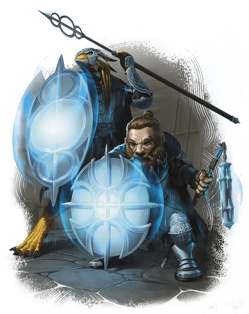

Страж заклятий
Spellguard
Средний или Маленький Гуманоид, Принципиальный Нейтральный

Класс Защиты 20 Инициатива +3 (13)
Хиты 105 (14к8 + 42)
Скорость 30 футов
| мод | спас | ||
|---|---|---|---|
| СИЛ | 18 | +4 | +4 |
| ЛОВ | 11 | +0 | +0 |
| ТЕЛ | 16 | +3 | +6 |
| мод | спас | ||
|---|---|---|---|
| ИНТ | 12 | +1 | +1 |
| МДР | 13 | +1 | +4 |
| ХАР | 10 | +0 | +0 |
Чувства пассивное Восприятие 14
Языки Общий
Опасность 5 (1 800 опыта; БВ +3)
Особенности
Улучшенное сопротивление магии. Страж совершает с Преимуществом спасброски от заклинаний и прочих магических эффектов. Броски атаки заклинаниями против стража совершаются с Помехой.
Действия
Мультиатака. Страж совершает две атаки Силовым цепом или Метательным копьём в любой комбинации.
Силовой цеп. Бросок рукопашной атаки: +7, досягаемость 5 фт. Попадание: 8 (1к8 + 4) Дробящего урона плюс 7 (2к6) Силового урона.
Метательное копьё. Бросок рукопашной или дальнобойной атаки: +7, досягаемость 5 фт. или дистанция 30/120 фт. Попадание: 14 (3к6 + 4) Колющего урона.
Реакции
Защитное прорицание. Условие: Видимое стражем существо попадает броском атаки по союзнику в пределах 5 футов от стража, или союзник в пределах 5 футов от стража проваливает спасбросок против заклинания или другого магического эффекта. Эффект: Страж бросает 1к20 и решает, использовать ли новый бросок вместо прежнего результата на к20 для этой атаки или спасброска.
Бонус мастерства +3
Среда обитания Город
Сокровища Оружейные
Страж заклятий
Закалённый магией телохранитель
Стражи заклятий — профессиональные телохранители, специализирующиеся на отражении магической агрессии. Они дополняют свои внушительные доспехи магической защитой, чтобы оберегать себя и своих подопечных. Чаще всего они служат заклинателям, не доверяющим соперникам, но страж заклятий может и охранять любого, кто опасается магических врагов. Щит ограждения от заклятий назван в честь этой традиции, ибо сила этого предмета повторяет силу этих воинов.